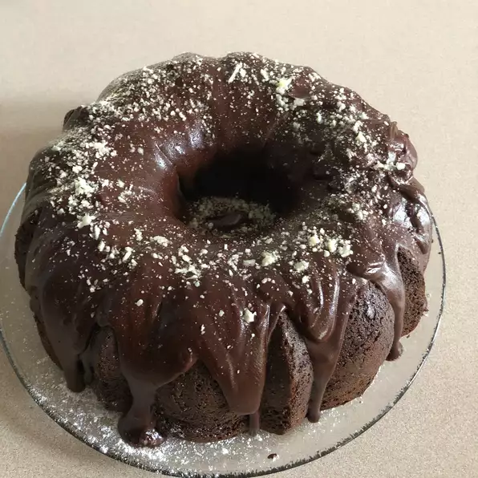

<!DOCTYPE html>
<html lang="en"></html>
<meta charset="UTF-8">
<h1> Chocolate Glaze</h1>

<p3>Satiny chocolate drizzle for a Bundt cake. It's also great on cookies and doughnuts.
</p3>
<h3>Ingredients</h3>
<li>¾ cup semisweet chocolate chips
</li>
<li>3 tablespoons butter
</li>
<li>1 tablespoon light corn syrup
</li>
<li>¼ teaspoon vanilla extract
</li>
<h3>Directions</h3>
<ol>
<li>Combine chocolate chips, butter, and corn syrup in a double boiler over hot, but not boiling water. Gently stir until chocolate is melted and mixture is smooth, then add vanilla.

</li>
<li>To use, spread warm glaze over top of your cooled cake, letting it drizzle down the sides.

</li>
</ol>
<a href="https://www.allrecipes.com/recipe/8236/satiny-chocolate-glaze/">Chocolate Glaze</a>